METACHICK PORTFOLIO — 2026
めたち
めたち工房 ／ 個人ポートフォリオ
ABOUT THE METACHI
△
A NOTE ON MY WORK
厳密性と誠実さを大切にしながら、
あらゆる分野の面白い世界観を届けたい！
□
SELECTED WORKS ／ 01—04
作ったもの
これら制作物は、基本的にはすべて一人で作成しています。
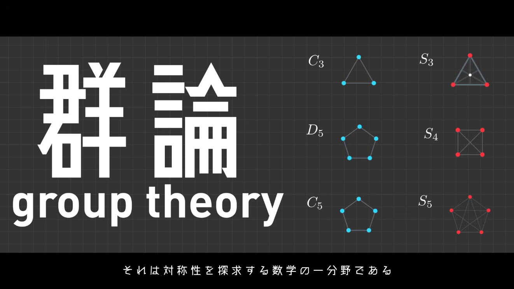
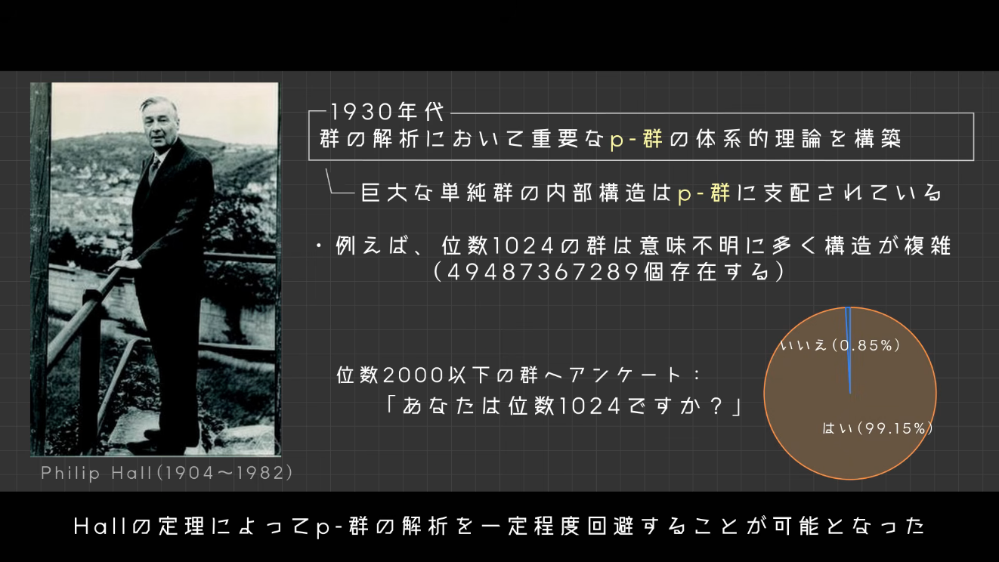
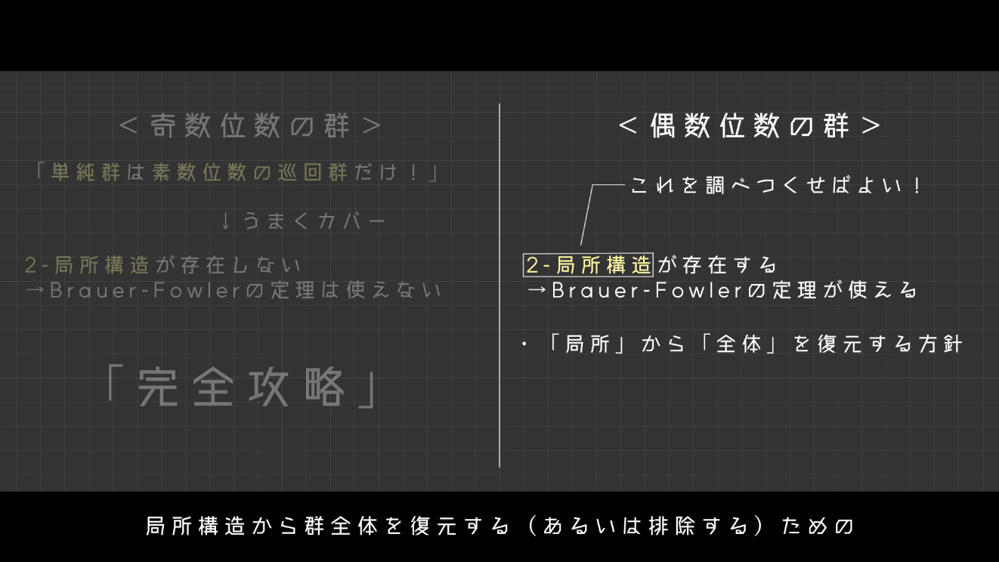
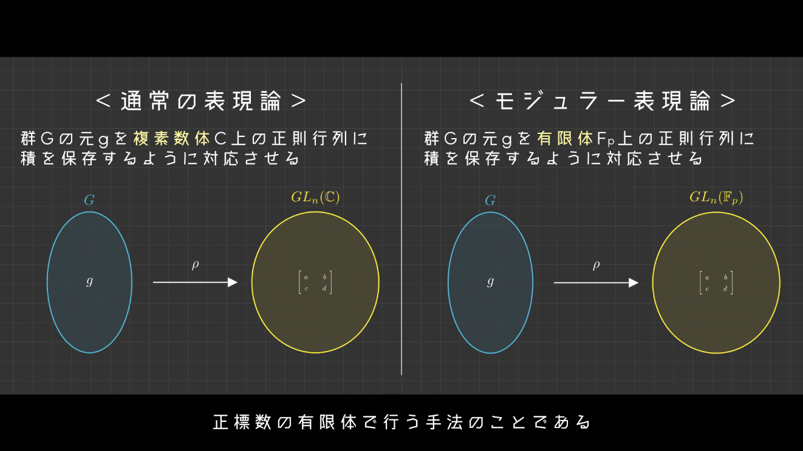
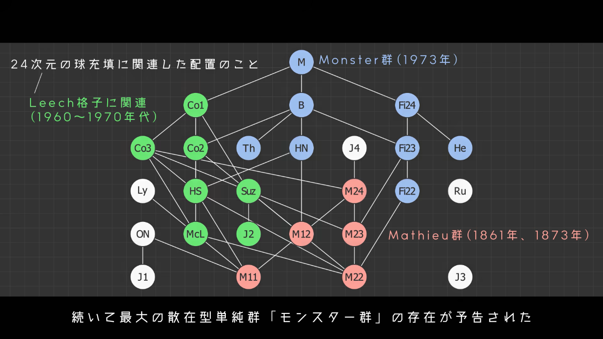
01
01 / VIDEOMAIN PROJECT
大学数学の解説動画
Mathematics, made visual.
大学数学をテーマに、滑らかなアニメーションを用いて数学の世界観を視覚的に解説するYouTubeチャンネルを運営しています。
専門的な内容も積極的に扱いながら、すべてを理解できなくとも、数学への憧れが止まらなくなるような動画を目指して制作しています。
企画、リサーチ、台本制作、素材作成、映像編集まですべて自分で行っています。
約5,000人チャンネル登録者数
約174,000回総視聴回数
YouTubeチャンネルを見る
↗
02
EVENT / VRCHAT企画・運営
イベント主催『VRC数学談話会』
VR空間上で数学を解説するイベントを主催しています。
毎週15～40人程度の方に参加していただいています。
イベント企画、Unityによるワールト制作、イベントロゴ作成、ポスター作成等をすべて1人で行い、運営をもう1人の方と協力して2人で行っています。
イベント記録・グループリンクはこちら
↗
03
WEB / INTERFACE設計・デザイン・実装
個人Webサイト『めたち工房』
制作物や読書の感想文、プログラミングの備忘録などを残すためのWebサイトです。
UIデザインはFigmaで行い、HTML,CSSを用いて制作しました。
最近は、実装にAIを活用しています。一応、手書きすることも可能です...。
『めたち工房』はこちら
↗
04
EDITORIAL / MATHEMATICS執筆・構成
数学の記事・スライド
真面目な数学の内容のPDFなどです。
LaTeXを用いて制作していますが、どちらかというと論文よりも教科書のような見た目になっています。
行間が少ないかつ冗長でない説明を目指しました。
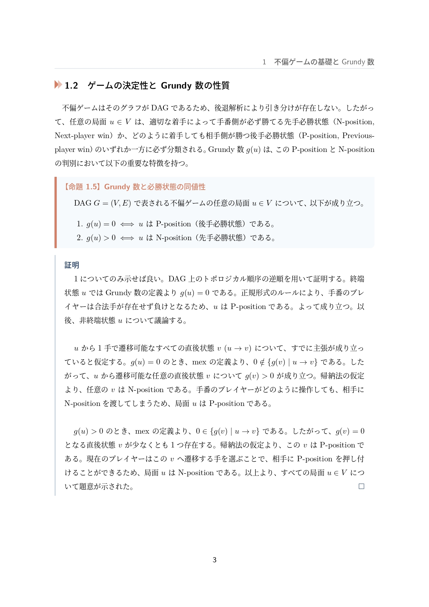
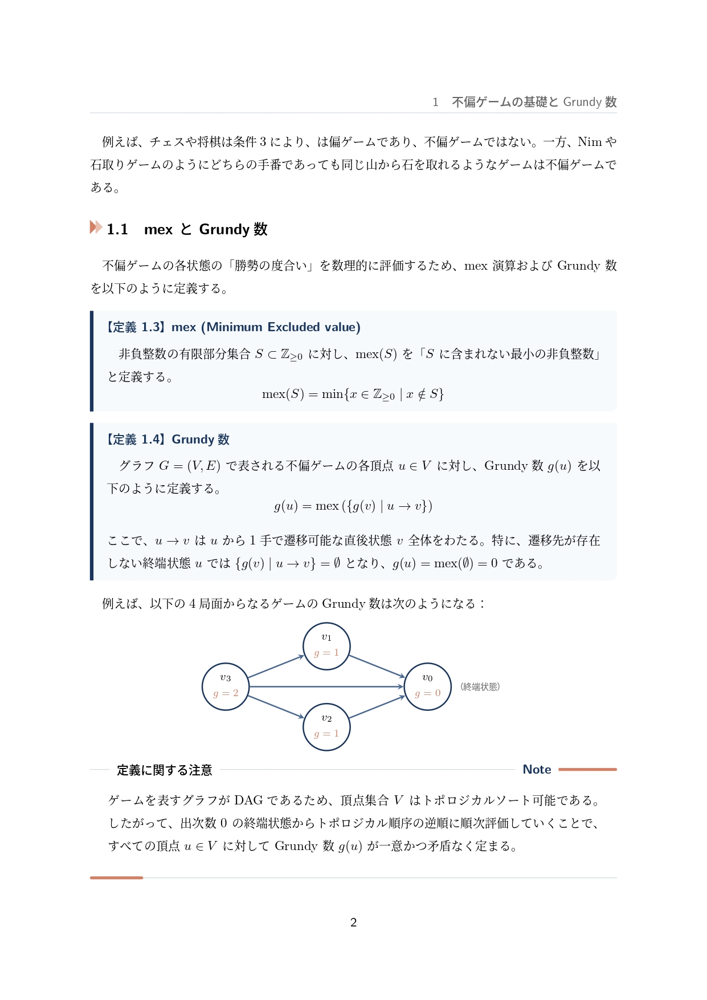
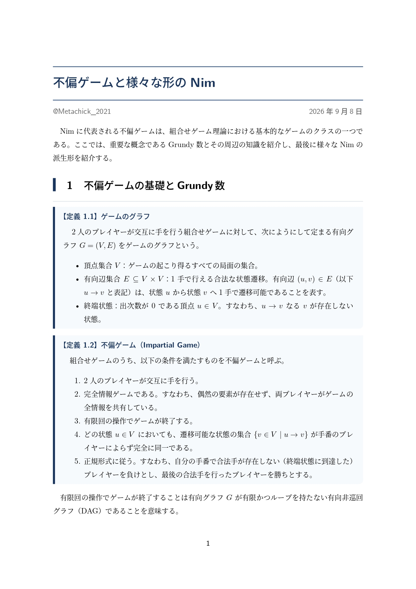
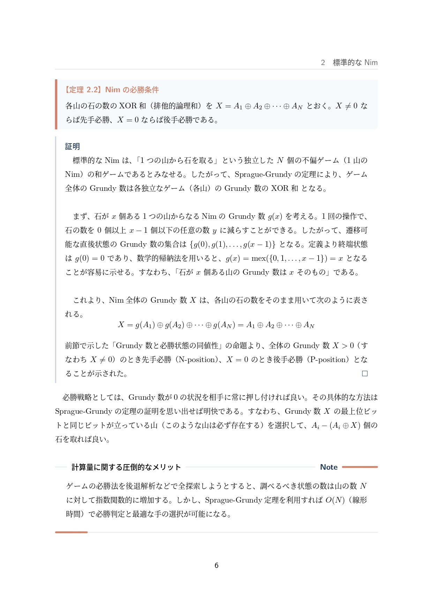
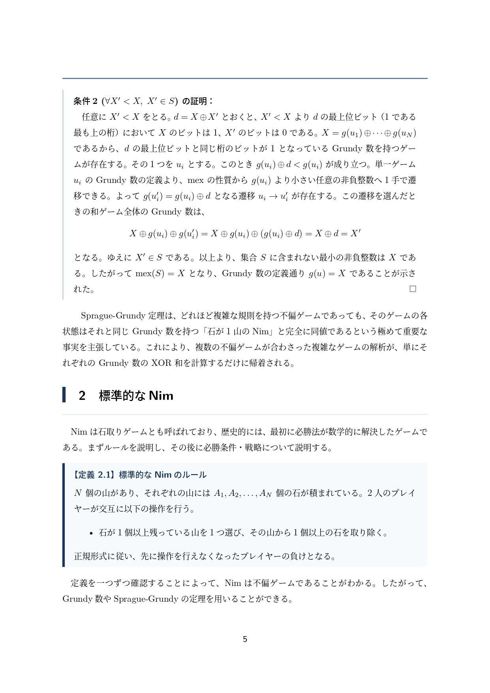
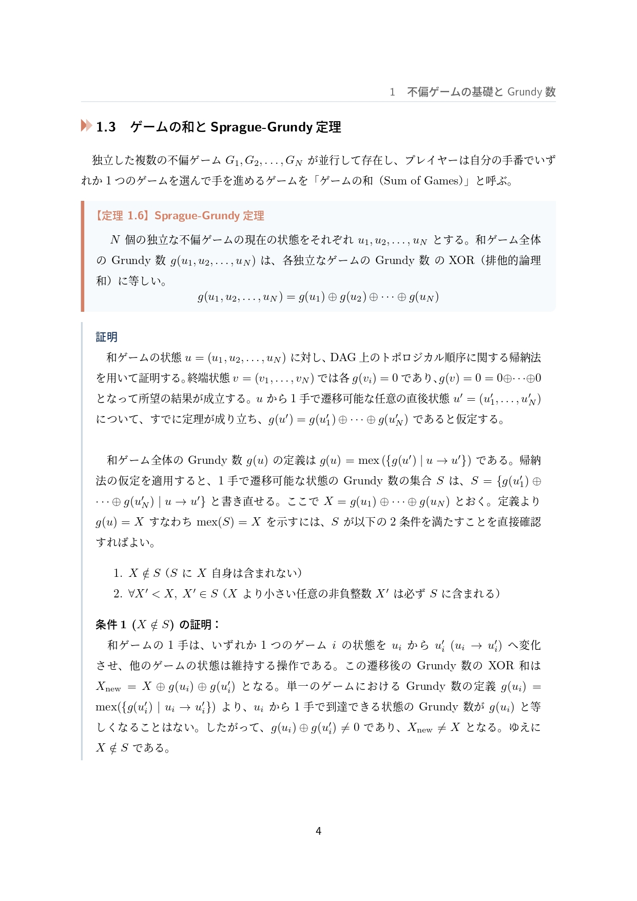